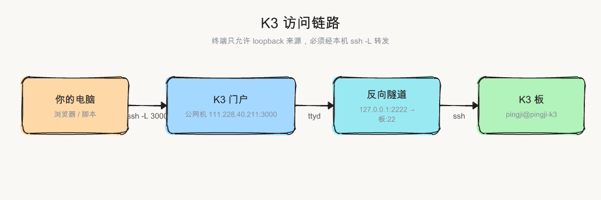
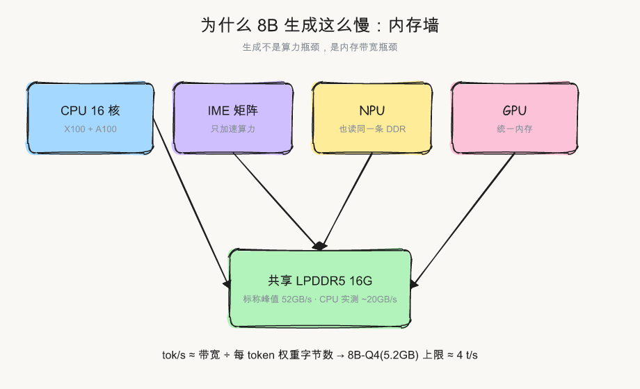
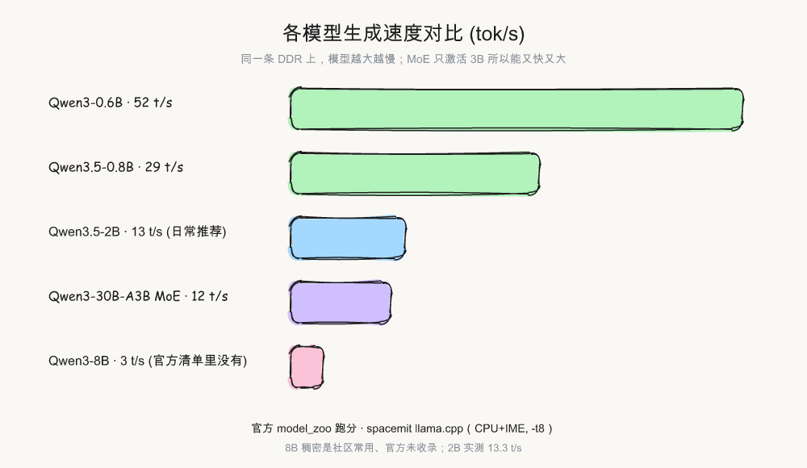
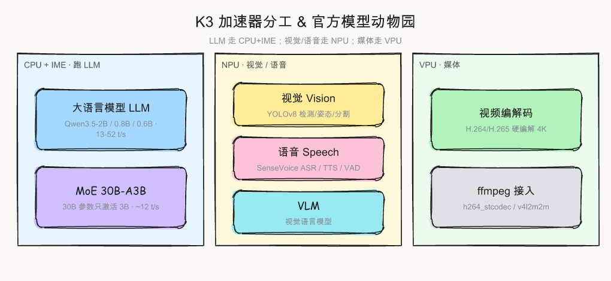

板子：pingji-k3 · Bianbu 4.0.1 · 16GB · 2026-09-29 · 由远程实测整理
| 项 | 值 |
|---|---|
| 主机名 / 用户 | pingji-k3 / pingji（在 sudo 组） |
| 系统 | Bianbu 4.0.1 (Resolute Raccoon)，ID=bianbu |
| 内核 | Linux 6.18.3-generic #1.0.1.4 SMP PREEMPT_DYNAMIC riscv64 |
| SoC | SpacemiT K3：X100 ×8 @2.4GHz + A100 ×8 @2.0GHz（共 16 核） |
| 内存 / 存储 | 15 GiB LPDDR5（无 swap）/ eMMC 119GB（/ 已用 7%） |
| 加速器 | IME 矩阵扩展、NPU (/dev/npu0)、VPU 硬编解码 |
| 网络 | WiFi wlP4p1s0 = 192.168.110.194，出口 ~87Mbps 下 / ~40Mbps 上 |

门户 http://111.228.40.211:3000（口令登录）。终端 /term/ 是定制 ttyd，只允许 loopback 来源，所以要先在本机做本地转发：
ssh -N -L 3000:127.0.0.1:3000 root@111.228.40.211
# 然后打开 http://127.0.0.1:3000/term/坑：ttyd 协议被定制，WebSocket 第一帧必须是认证 JSON {"AuthToken":"","columns":C,"rows":R}，之后才按 '0'+输入 发，否则一敲就断。
用自写 microbenchmark（8 路独立累加 + RVV + 巨大页）测 CPU 侧可达带宽：
| 测法 | 8 线程 | 16 线程 |
|---|---|---|
| 纯读 | ~20 GB/s | ~20 GB/s |
| memcpy（读+写） | ~23 GB/s | ~23 GB/s |

8B-Q4 每 token 读 ~5.2GB，理论上限 20GB/s ÷ 5.2GB ≈ 4 t/s，实测 2.9 t/s 已贴近 CPU 能给的极限。
| 运行时 | 模型 | prompt (pp128) | 生成 (tg) |
|---|---|---|---|
| ollama (spacemit 版) | Qwen3-8B Q4_K_M | 3.6 t/s | 2.45 t/s |
| llama.cpp (spacemit/IME2) | Qwen3-8B Q4_K_M | 27.5 t/s | 2.86 t/s |
| llama.cpp (spacemit/IME2) | Qwen3.5-2B Q4_0 | 115.7 t/s | 13.29 t/s |
IME 矩阵扩展只加速算力 → prompt 处理快；生成是带宽瓶颈，IME/NPU 都帮不上。

spacemit-ai-gateway + spacemit-ailab：SpacemiT 给 K3 调好的一批模型 + 网页控制台，覆盖 LLM / VLM / Vision / Speech。模型 GGUF 直接放在 archive.spacemit.com/spacemit-ai/model_zoo/。

| 模型 | 量化 | pp128 | tg128 |
|---|---|---|---|
| Qwen2.5-0.5B | Q4_0 | 402 | 53.7 |
| Qwen3-0.6B | Q4_0 | 479 | 52.4 |
| Qwen3.5-0.8B | Q4_0 | 99 | 28.8 |
| Qwen3.5-2B | Q4_0 | 78 | 16.2 |
| Qwen3-30B-A3B（MoE，激活 3B） | Q4_0 | 56 | 11.6 |
板上有硬件 VPU，做 H.264 / H.265 实时编解码（4K），在 ffmpeg 里暴露为 h264_stcodec、h264_v4l2m2m、hevc_v4l2m2m，配套软件 mpp2（SpacemiT Media Processing Platform）。
（注意：/dev/vcs* 是虚拟终端，不是编解码器。）硬件编解码对 NVR/直播/转码很实用，但不稀缺（Pi5、RK3588 都有，RK3588 还支持 8K）。
spacemit-ailab 跑视觉/语音（NPU 主场）。# 官方 ollama（单文件，用户态）
apt-get download spacemit-ollama-toolkit
dpkg-deb -x spacemit-ollama-toolkit_*_riscv64.deb ~/ollama-dist
cp ~/ollama-dist/usr/bin/ollama ~/ollama/bin/
setsid nohup ~/ollama/bin/ollama serve >~/ollama/serve.log 2>&1 </dev/null &
~/ollama/bin/ollama pull qwen3:8b
~/ollama/bin/ollama run qwen3:8b
# SpacemiT llama.cpp（IME2）+ 官方 2B 模型
for p in llama.cpp-tools-spacemit spacemit-runtime spacemit-onnxruntime; do apt-get download $p; done
mkdir -p /tmp/sp && for f in *.deb; do dpkg-deb -x "$f" /tmp/sp; done
export LD_LIBRARY_PATH=/tmp/sp/usr/lib
curl -sSL -o ~/models/Qwen3.5-2B-Q4_0.gguf \
https://archive.spacemit.com/spacemit-ai/model_zoo/llm/Qwen3.5-2B-Q4_0.gguf
/tmp/sp/usr/bin/llama-bench -m ~/models/Qwen3.5-2B-Q4_0.gguf -p 128 -n 128 -t 8